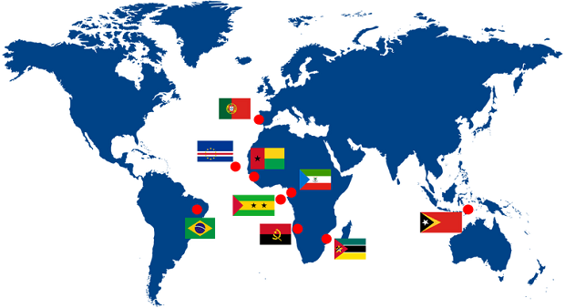

ポルトガル語学習入門
ポルトガル語は、ポルトガル以外の8カ国（アンゴラ、ブラジル、カーボベルデ、ギニアビサウ、赤道ギニア、モザンビーク、サントメ・プリンシペ、東ティモール）の公用語であります。
ポルトガル語には多様な方言があり、その多くは標準ポルトガル語とは語彙が著しく異なる。しかし、これらの違いは、異なる方言の話者間の明瞭性を大きく損なうものではありません。
ポルトガル語は比較的合成的で柔軟な言語です。
名詞、形容詞、代名詞、冠詞は適度に屈折し、2つの性（男性名詞と女性名詞）と2つの数（単数形と複数形）があります。人称代名詞はさらに、主語、動詞の目的語、前置詞の目的語の3種類に大別されます。
ほとんどの名詞と形容詞は、多くの短縮形または増強形の派生接尾辞を取ることができ、ほとんどの形容詞は「最上級」の派生接尾辞を取ることができます。形容詞は通常、名詞の後に続きます。